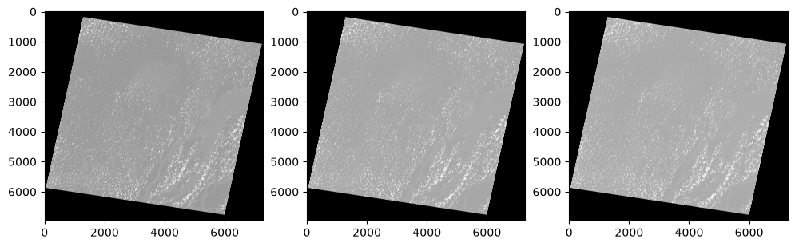
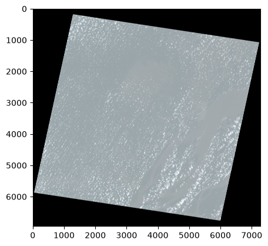
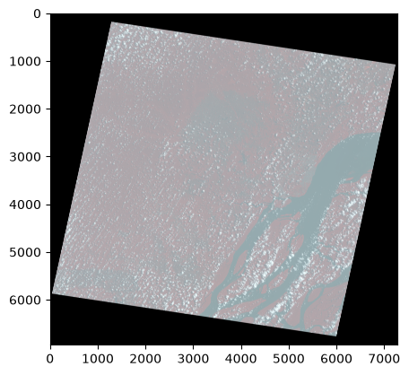
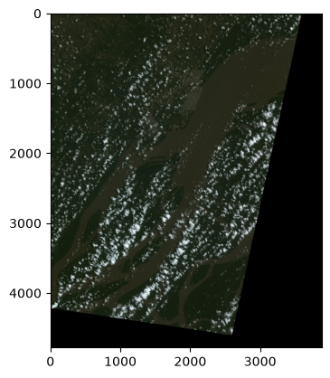
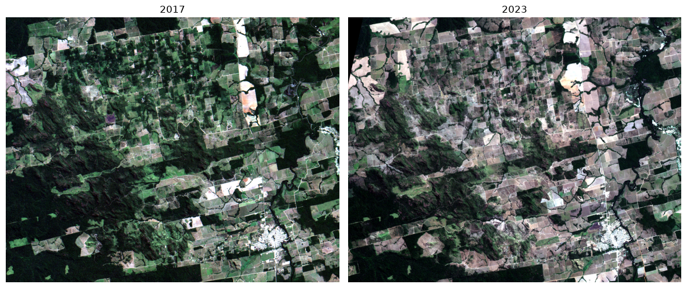

Code
# rode isso apenas se voce estiver no colab!
# git clone https://github.com/ftl-brazil-2026/ebook.git
# pip install -r requirements.txtLink Colab

Nós vimos que é facil entrar em um provedor, pesquisar uma data e encontrar as images que queremos. Porém baixar tudo na mão parece ser extremamente trabalhoso, demandando muito tempo para prosseguir. Dessa forma, a comunidade engajada do mundo geoespacial criou o STAC (Spatial Temporal Asset Catalogue), que basicamente reune todos os provedores e dados em um sistema organizado que te permite buscar, localizar e baixar as images de sua preferência. Primeiramente vamos nos familiarizar um pouco com o STAC antes de prosseguirmos com operações mais avançadas de sensoriamento remoto.
# rode isso apenas se voce estiver no colab!
# git clone https://github.com/ftl-brazil-2026/ebook.git
# pip install -r requirements.txtfrom pystac_client import ClientClient?Precisamos entao encontrar a nossa API para depois conseguir baixar os dados. Assim, o próprio site da STAC favorece uma lista de API STAC-API-catalogo
cbers_inpe = "https://data.inpe.br/bdc/stac/v1/"client = Client.open(cbers_inpe)# vamos listar todas as colecoes
for collection in client.get_collections():
print(collection)<CollectionClient id=GOES19-L2-CMI-1>
<CollectionClient id=S2_L2A-1>
<CollectionClient id=AMZ1-WFI-L2-DN-1>
<CollectionClient id=mosaic-cbers4a-paraiba-3m-1>
<CollectionClient id=mosaic-landsat-sp-6m-1>
<CollectionClient id=mosaic-s2-paraiba-3m-1>
<CollectionClient id=mosaic-s2-yanomami_territory-6m-1>
<CollectionClient id=modisa-ocsmart-rrs-monthly-1>
<CollectionClient id=landsat-2>
<CollectionClient id=s3-olci-rrs-water-1>
<CollectionClient id=AMZ1-WFI-L4-DN-1>
<CollectionClient id=s3-olci-pc-tiete-1>
<CollectionClient id=mod13q1-6.1>
<CollectionClient id=sentinel-1-grd-bundle-1>
<CollectionClient id=s2_msi_mq_wqp-1>
<CollectionClient id=sentinel-1-rtc-1>
<CollectionClient id=sentinel-3-olci-l1-bundle-1>
<CollectionClient id=CB4-MUX-L2-DN-1>
<CollectionClient id=s2_msi_mq_rrs-1>
<CollectionClient id=S2-16D-2>
<CollectionClient id=GOES-GL-DSWRF-Daily-1>
<CollectionClient id=mosaic-landsat-amazon-3m-1>
<CollectionClient id=CBERS4-WFI-16D-2>
<CollectionClient id=mosaic-s2-amazon-3m-1>
<CollectionClient id=landsat-tsirf-bimonthly-1>
<CollectionClient id=mosaic-landsat-brazil-6m-1>
<CollectionClient id=myd13q1-6.1>
<CollectionClient id=CB4-WFI-L4-SR-1>
<CollectionClient id=CB2B-HRC-L2-DN-1>
<CollectionClient id=CB4A-WPM-L2-DN-1>
<CollectionClient id=charter-wfi-1>
<CollectionClient id=topodata-1>
<CollectionClient id=mosaic-s2-cerrado-4m-1>
<CollectionClient id=modisa-ocsmart-biogeochemical-monthly-1>
<CollectionClient id=samet_hourly-1>
<CollectionClient id=mosaic-cbers4-brazil-3m-1>
<CollectionClient id=CBERS-WFI-8D-1>
<CollectionClient id=S2_L1C_BUNDLE-1>
<CollectionClient id=CB4A-MUX-L2-DN-1>
<CollectionClient id=landsat-tsirf-yearly-1>
<CollectionClient id=modisa-ocsmart-biogeochemical-daily-1>
<CollectionClient id=mosaic-s2-cerrado-2m-1>
<CollectionClient id=CB4-PAN10M-L2-DN-1>
<CollectionClient id=landsat-lgi-1>
<CollectionClient id=AMZ1-WFI-L4-SR-1>
<CollectionClient id=CB4-PAN5M-L4-DN-1>
<CollectionClient id=CBERS4-MUX-2M-1>
<CollectionClient id=CB4A-WFI-L4-SR-1>
<CollectionClient id=charter-mux-1>
<CollectionClient id=CB4-WFI-L2-DN-1>
<CollectionClient id=CB4A-WPM-L4-DN-1>
<CollectionClient id=mod11a2-6.1>
<CollectionClient id=CB4A-WFI-L2-DN-1>
<CollectionClient id=CB4-PAN10M-L4-DN-1>
<CollectionClient id=CB4-PAN5M-L2-DN-1>
<CollectionClient id=mosaic-s2-brazil-3m-1>
<CollectionClient id=mosaic-s2-amazon-1m-1>
<CollectionClient id=CB4A-MUX-L4-DN-1>
<CollectionClient id=CB4A-WFI-L4-DN-1>
<CollectionClient id=GOES13-L3-IMAGER-1>
<CollectionClient id=CB2B-CCD-L2-DN-1>
<CollectionClient id=myd11a2-6.1>
<CollectionClient id=CB2B-WFI-L2-DN-1>
<CollectionClient id=modisa-ocsmart-rrs-daily-1>
<CollectionClient id=charter-wpm-1>
<CollectionClient id=LANDSAT-16D-1>
<CollectionClient id=topodata_bundle-1>
<CollectionClient id=charter-pan-1>
<CollectionClient id=CB4A-MUX-L4-SR-1>
<CollectionClient id=CB4-MUX-L4-SR-1>
<CollectionClient id=prec_merge_hourly-1>
<CollectionClient id=CB4-WFI-L4-DN-1>
<CollectionClient id=CB4-MUX-L4-DN-1>
<CollectionClient id=samet_daily-1>
<CollectionClient id=CB4A-WPM-PCA-FUSED-1>
<CollectionClient id=mosaic-s2-amazon-3m-b08b04b03-1>
<CollectionClient id=EtaCCDay_CMIP5-1>
<CollectionClient id=GOES16-L2-CMI-1>
<CollectionClient id=CB2-CCD-L2-DN-1>
<CollectionClient id=prec_merge_daily-1># vamos ver a metadata
collection = client.get_collection('CB4-MUX-L4-SR-1')collectionsearch = client.search(
max_items=10,
collections=["sentinel-2-c1-l2a"],
bbox=[-45.963435, -11.891593, -45.423607, -11.525831]
)item_search = client.search(bbox=[-45.963435, -11.891593, -45.423607, -11.525831],
datetime='2024-08-01/2025-07-31',
collections=['CB4-MUX-L4-SR-1'],
query={
"eo:cloud_cover": {"lt": 15}
})
## voce pode passar mais filtros as query como
# query={
# "tileId": {"in": ["22JHT", "22JGT", "22KHU", "22KGU"]}
# }
## nesse caso selecionando todos os tiles
item_search<pystac_client.item_search.ItemSearch at 0x10e8f60d0>Esse método retorna uma representação ItemSearch a qual possue métodos acessíveis para identificar os resultados
item_search.matched()19for item in item_search.items():
print(item)<Item id=CBERS_4_MUX_20250722_156_113_L4>
<Item id=CBERS_4_MUX_20250719_157_113_L4>
<Item id=CBERS_4_MUX_20250626_156_113_L4>
<Item id=CBERS_4_MUX_20250623_157_113_L4>
<Item id=CBERS_4_MUX_20250531_156_113_L4>
<Item id=CBERS_4_MUX_20250528_157_113_L4>
<Item id=CBERS_4_MUX_20250505_156_113_L4>
<Item id=CBERS_4_MUX_20250409_156_113_L4>
<Item id=CBERS_4_MUX_20250314_156_113_L4>
<Item id=CBERS_4_MUX_20250121_156_113_L4>
<Item id=CBERS_4_MUX_20241223_157_113_L4>
<Item id=CBERS_4_MUX_20241130_156_113_L4>
<Item id=CBERS_4_MUX_20241101_157_113_L4>
<Item id=CBERS_4_MUX_20241009_156_113_L4>
<Item id=CBERS_4_MUX_20241006_157_113_L4>
<Item id=CBERS_4_MUX_20240913_156_113_L4>
<Item id=CBERS_4_MUX_20240910_157_113_L4>
<Item id=CBERS_4_MUX_20240818_156_113_L4>
<Item id=CBERS_4_MUX_20240815_157_113_L4>Isso é tudo? Claro que não, também podemos filtrar através do nosso querido geopandas
Toma essa pedrada aqui
import geobrmuni = geobr.read_municipality(year=2020)
muni = muni.loc[muni['abbrev_state']=='PA']# convert to WGS84 (padrao internacional)
acara = muni.to_crs(4326).iloc[3]geom = acara.geometry
bounds = geom.bounds
print(f"Geometria: {geom}")
print()
print(f"Tipo da geometria: {geom.geom_type}")
print()
print(f"Bounds: {bounds}")Geometria: POLYGON ((-50.50552749999999 0.18421312, -50.487641394 0.182131646, -50.47088226999999 0.177517622, -50.453262471 0.168380503, -50.432880081 0.149561829, -50.412970485 0.11246927, -50.39569862999999 0.050498172, -50.392408435 0.043802715, -50.377884294 0.022813954, -50.33181063899999 -0.013135121, -50.303169569 -0.058106244, -50.298803919 -0.0682877, -50.29750065799999 -0.076907141, -50.29866601199999 -0.101589071, -50.195977641 -0.213524257, -50.107219092 -0.470861646, -50.114524226 -0.4647672029999998, -50.233640676 -0.312785947, -50.23793479799999 -0.314432649, -50.24891409999999 -0.328941307, -50.248903115 -0.331782522, -50.26709537499999 -0.343060697, -50.268934353999995 -0.347090542, -50.26434494699999 -0.349092106, -50.26432067199999 -0.3536532110000001, -50.272549680000004 -0.3563823700000001, -50.270107392 -0.362346172, -50.271754099 -0.3664660499999999, -50.27124171199999 -0.369450066, -50.272674329999994 -0.370605038, -50.270769655 -0.374336869, -50.27273425599999 -0.388825775, -50.27099588899999 -0.394919251, -50.271329635 -0.401021416, -50.27646656899999 -0.4053761619999999, -50.27706008100001 -0.416254322, -50.283704306 -0.4177852570000001, -50.286514186 -0.4270074689999999, -50.28729715299999 -0.442007743, -50.28523355499999 -0.455084404, -50.287532821000006 -0.460592909, -50.288298403 -0.471919366, -50.301986371999995 -0.470859188, -50.307638506 -0.472719031, -50.310181165 -0.4790833199999999, -50.317934920999996 -0.487018107, -50.322946865 -0.4956312580000001, -50.319260584 -0.500772729, -50.325793038 -0.5181105779999999, -50.326153420999994 -0.5228897879999999, -50.322618885999994 -0.528411348, -50.32019509399999 -0.5365424339999999, -50.328949257999994 -0.544015078, -50.330039681 -0.5507829179999999, -50.328881925 -0.555549062, -50.33328244799999 -0.557463329, -50.333877390999994 -0.564264892, -50.329313285 -0.568870252, -50.324134046 -0.5706019699999999, -50.322884561 -0.577940301, -50.31977519299999 -0.580010917, -50.319087241 -0.5821934969999999, -50.318832081 -0.586903864, -50.323915663 -0.5980117089999998, -50.324476396 -0.6030956329999999, -50.318305732999995 -0.613684691, -50.325268711 -0.6207799480000001, -50.327395939 -0.633144343, -50.334452106 -0.6382022349999998, -50.338979755 -0.636125328, -50.342803483999994 -0.629409833, -50.35157846799999 -0.627441748, -50.35802605399999 -0.6294282479999999, -50.358656763999996 -0.637645688, -50.362324468999994 -0.6419819929999999, -50.370151979 -0.6418981489999999, -50.385097142 -0.6384161800000001, -50.391231058 -0.6444433, -50.39913706699999 -0.648308953, -50.406532054 -0.6659411079999998, -50.404146363 -0.675465542, -50.406410551 -0.689295778, -50.404492082 -0.696236134, -50.40585441899999 -0.700865854, -50.41771023599999 -0.704873167, -50.432179221999995 -0.701867027, -50.436514166 -0.699820217, -50.441191151000005 -0.6925548149999999, -50.449436433 -0.6870985599999999, -50.462711301000006 -0.684298589, -50.467010671999994 -0.692465787, -50.469845116 -0.7123114669999999, -50.473062633 -0.7206367619999999, -50.47676213700001 -0.723834631, -50.477493443 -0.7209560479999999, -50.49059907 -0.710308105, -50.512800934999994 -0.6999079549999999, -50.518257145 -0.6953118319999999, -50.527515339 -0.68045534, -50.53135603199999 -0.676765208, -50.537101574 -0.6741712369999999, -50.541557489 -0.6724600440000001, -50.57699427699999 -0.669867023, -50.605155769 -0.6698608179999999, -50.60898339799999 -0.668087617, -50.612294926 -0.6661255549999999, -50.61682577199999 -0.6591861449999998, -50.619997794999996 -0.649761966, -50.624497212 -0.6435707689999999, -50.632086313 -0.639390639, -50.640867312 -0.6368965659999999, -50.659244967999996 -0.638012331, -50.663704722000006 -0.637149355, -50.684189377 -0.622449044, -50.686422399 -0.6189020770000001, -50.690996905999995 -0.5942915549999997, -50.701006869 -0.579534066, -50.71069481 -0.556963541, -50.728749392999994 -0.539773115, -50.737000992999995 -0.525772722, -50.746394105 -0.5154547189999998, -50.76122297199999 -0.5070380720000001, -50.77125400399999 -0.50881465, -50.792674124 -0.521835048, -50.80392162399999 -0.5252070229999999, -50.842681384 -0.531944163, -50.860085932 -0.5394353959999999, -50.913504018999994 -0.555401725, -50.958113889 -0.5744286869999999, -50.968225871 -0.581198295, -50.9858983 -0.596611301, -51.011059573 -0.6309225189999998, -51.02233707399999 -0.641487667, -51.044752748 -0.6533240160000001, -51.055047087000005 -0.6566700119999999, -51.079399981 -0.661832551, -51.094455161999996 -0.66155512, -51.099919922999995 -0.6570233319999998, -51.11789186199999 -0.649309436, -51.12356556799999 -0.6388722989999999, -51.121839247 -0.6251766429999999, -51.104643738 -0.594502246, -51.09292411300001 -0.5628769540000002, -51.095753338 -0.546356702, -51.101795921999994 -0.5410687569999999, -51.10443970099999 -0.5410684319999999, -51.12425473 -0.550700651, -51.144673454999996 -0.5478598399999999, -51.150720243 -0.545025568, -51.16715731699999 -0.5314234029999998, -51.17489231999999 -0.520164973, -51.180914406999996 -0.505630156, -51.18055914699999 -0.501468177, -51.178103252999996 -0.4990136149999998, -51.16109016699999 -0.492985153, -51.150338569999995 -0.4861773559999999, -51.14844981400001 -0.483156327, -51.14938797599999 -0.4682314609999999, -51.14844216699999 -0.4614347990000001, -51.142211851999996 -0.448974706, -51.14094799699999 -0.436973151, -51.143517591 -0.420682553, -51.14825141699999 -0.409256593, -51.155051188 -0.4024578489999999, -51.16529030699999 -0.4049593479999999, -51.19585597 -0.4202054969999999, -51.209096825 -0.4239807309999999, -51.229505763 -0.4290801839999999, -51.272033689999994 -0.431906376, -51.303847442 -0.4367483019999999, -51.33485433800001 -0.44534919, -51.35316300699999 -0.45334942, -51.363036859 -0.459991353, -51.371928521 -0.463975806, -51.427895557999996 -0.4764486929999999, -51.432479184 -0.4733425139999999, -51.42843357499999 -0.4619430110000001, -51.423669527 -0.436611184, -51.42072552999999 -0.428993181, -51.41667555 -0.424349896, -51.403771327 -0.4147374899999999, -51.36836991199999 -0.376257533, -51.362505289 -0.368107914, -51.362004016 -0.358820731, -51.354451847 -0.318524078, -51.34778282599999 -0.29961334, -51.339009671 -0.284576967, -51.332118322 -0.27378442, -51.323032110999996 -0.2637693280000001, -51.314950887 -0.2589056240000001, -51.306900666 -0.256091726, -51.302481611999994 -0.252642652, -51.28959545699999 -0.228076845, -51.259976644000005 -0.186993986, -51.257173959 -0.1805518989999999, -51.24098061499999 -0.156214057, -51.235036198 -0.143639152, -51.21636285899999 -0.118612786, -51.211565834 -0.118558104, -51.174898631 -0.104534773, -51.15136097399999 -0.103185898, -51.11320271499999 -0.096607927, -51.09972835899999 -0.091257984, -51.097034527 -0.088359381, -51.084918057 -0.087540136, -51.075930658999994 -0.083732497, -51.065674179 -0.076226305, -51.039642633999996 -0.043500375, -51.017338174 -0.010723634, -51.007475584 -0.000345649, -51.000473192 -0.000345649, -50.99691225099999 0.003451082, -50.985116033999994 0.029420072, -50.980962928 0.035405772, -50.95947258599999 0.05385794, -50.946239869 0.062709271, -50.921093250999995 0.076133569, -50.80351855 0.106323446, -50.76195613600001 0.120977995, -50.74350884099999 0.130485156, -50.718752435 0.146967632, -50.700979577999995 0.161606765, -50.668197496 0.185034472, -50.623601042999994 0.231776274, -50.606778257 0.245736404, -50.599667974 0.249357407, -50.59747472099999 0.244017858, -50.580159097 0.227188826, -50.558318697999994 0.212895155, -50.54415736599999 0.201131342, -50.52301344 0.188375297, -50.50552749999999 0.18421312))
Tipo da geometria: Polygon
Bounds: (-51.432479184, -0.723834631, -50.107219092, 0.249357407)import folium
from shapely.geometry import box
bounds_polygon = box(*bounds)
centro_lat = (bounds[1] + bounds[3]) / 2
centro_lon = (bounds[0] + bounds[2]) / 2
m = folium.Map(location=[centro_lat, centro_lon], zoom_start=15)
folium.GeoJson(
geom,
name="Acara",
style_function=lambda x: {
'fillColor': 'green',
'color': 'darkgreen',
'weight': 2,
'fillOpacity': 0.5
}
).add_to(m)
folium.GeoJson(
bounds_polygon.__geo_interface__,
name="Bounds",
style_function=lambda x: {
'fillColor': 'none',
'color': 'blue',
'weight': 3,
'fillOpacity': 0
}
).add_to(m)
m.fit_bounds([[bounds[1], bounds[0]], [bounds[3], bounds[2]]])
m
item_search = Client.open('https://data.inpe.br/bdc/stac/v1/').search(intersects=geom,
datetime='2024-08-01/2025-07-31',
collections=['CB4-MUX-L4-SR-1'],
query={"eo:cloud_cover": {"lt": 15}})
print(item_search.matched())7item_list = list(item_search.items())
item_list[<Item id=CBERS_4_MUX_20250727_163_101_L4>,
<Item id=CBERS_4_MUX_20250724_164_101_L4>,
<Item id=CBERS_4_MUX_20250628_164_101_L4>,
<Item id=CBERS_4_MUX_20241011_164_100_L4>,
<Item id=CBERS_4_MUX_20240915_164_100_L4>,
<Item id=CBERS_4_MUX_20240915_164_101_L4>,
<Item id=CBERS_4_MUX_20240817_165_100_L4>]Assets é onde estão guardado as metadatas, thumbnails, imagens e bandas.
item_n = 6
print(item_list[item_n])
item = item_list[item_n]<Item id=CBERS_4_MUX_20240817_165_100_L4>item.assets{'BAND5': <Asset href=https://data.inpe.br/bdc/data/CB4-MUX-L4-SR/2024_08/CBERS_4_MUX_DRD_2024_08_17.13_26_30_CB11/165_100_0/4_BC_UTM_WGS84/CBERS_4_MUX_20240817_165_100_L4_BAND5_GRID_SURFACE.tif>,
'BAND6': <Asset href=https://data.inpe.br/bdc/data/CB4-MUX-L4-SR/2024_08/CBERS_4_MUX_DRD_2024_08_17.13_26_30_CB11/165_100_0/4_BC_UTM_WGS84/CBERS_4_MUX_20240817_165_100_L4_BAND6_GRID_SURFACE.tif>,
'BAND7': <Asset href=https://data.inpe.br/bdc/data/CB4-MUX-L4-SR/2024_08/CBERS_4_MUX_DRD_2024_08_17.13_26_30_CB11/165_100_0/4_BC_UTM_WGS84/CBERS_4_MUX_20240817_165_100_L4_BAND7_GRID_SURFACE.tif>,
'BAND8': <Asset href=https://data.inpe.br/bdc/data/CB4-MUX-L4-SR/2024_08/CBERS_4_MUX_DRD_2024_08_17.13_26_30_CB11/165_100_0/4_BC_UTM_WGS84/CBERS_4_MUX_20240817_165_100_L4_BAND8_GRID_SURFACE.tif>,
'CMASK': <Asset href=https://data.inpe.br/bdc/data/CB4-MUX-L4-SR/2024_08/CBERS_4_MUX_DRD_2024_08_17.13_26_30_CB11/165_100_0/4_BC_UTM_WGS84/CBERS_4_MUX_20240817_165_100_L4_CMASK_GRID_SURFACE.tif>,
'thumbnail': <Asset href=https://data.inpe.br/bdc/data/CB4-MUX-L4-SR/2024_08/CBERS_4_MUX_DRD_2024_08_17.13_26_30_CB11/165_100_0/4_BC_UTM_WGS84/CBERS_4_MUX_20240817_165_100.png>}for k in item.assets.keys():
print(k)BAND5
BAND6
BAND7
BAND8
CMASK
thumbnailimport rasterio
import numpy as np
import matplotlib.pyplot as plt Imagens de satélite em resolução completa ocupam bastante memória (uma única banda dessa cena tem quase 51 milhões de pixels!). Se seu computador tem 4GB de RAM, é fácil travar o Jupyter sem perceber. Vamos criar uma função com psutil para acompanhar o consumo de memória RAM ao longo do notebook.
import psutil
def check_memory(label: str = "", warn_threshold: float = 85.0) -> None:
"""Imprime o uso atual de RAM e alerta se estiver perto do limite da máquina."""
mem = psutil.virtual_memory()
used_gb = mem.used / (1024 ** 3)
total_gb = mem.total / (1024 ** 3)
available_gb = mem.available / (1024 ** 3)
prefix = f"[RAM] {label}: " if label else "[RAM] "
print(f"{prefix}{used_gb:.2f} GB usados de {total_gb:.2f} GB ({mem.percent:.1f}%) | disponível: {available_gb:.2f} GB")
if mem.percent >= warn_threshold:
print(f"ATENÇÃO: uso de RAM acima de {warn_threshold:.0f}%! Considere reiniciar o kernel, "
"fechar outros programas, ou usar leitura por janelas (Window), como veremos mais adiante.")
check_memory("linha de base")[RAM] linha de base: 7.38 GB usados de 32.00 GB (69.2%) | disponível: 9.86 GBassets = item.assets
with rasterio.open(assets['BAND5'].href) as blue_ds:
blue = blue_ds.read(1)blue.shape(6945, 7281)blue.mean()np.float64(-2712.703948173639)with rasterio.open(assets['BAND6'].href) as green_ds:
green = green_ds.read(1)
with rasterio.open(assets['BAND7'].href) as blue_ds:
red = blue_ds.read(1)check_memory("depois de carregar 3 bandas em resolução total")[RAM] depois de carregar 3 bandas em resolução total: 8.33 GB usados de 32.00 GB (71.6%) | disponível: 9.08 GBfig, (ax1, ax2, ax3) = plt.subplots(1,3, figsize=(12, 4))
ax1.imshow(red, cmap='gray')
ax2.imshow(green, cmap='gray')
ax3.imshow(blue, cmap='gray')
vamos criar uma composição agora com as 3 bandas: RGB
def normalize(array, brightness_factor=1):
"""Normalizes numpy arrays with optional brightness adjustment"""
array_min, array_max = array.min(), array.max()
normalized = (array - array_min) / (array_max - array_min)
return np.clip(normalized * brightness_factor, 0, 1)brightness_factor = 1
rgb = np.dstack((
normalize(red, brightness_factor),
normalize(green, brightness_factor),
normalize(blue, brightness_factor))
)
plt.imshow(rgb)
check_memory("depois de criar a composição RGB (arrays float64)")[RAM] depois de criar a composição RGB (arrays float64): 8.95 GB usados de 32.00 GB (78.5%) | disponível: 6.88 GBLembrando que é NIR, G, B:
with rasterio.open(assets['BAND8'].href) as nir_ds:
nir = nir_ds.read(1)
brightness_factor = 1
rgb = np.dstack((
normalize(nir, brightness_factor),
normalize(green, brightness_factor),
normalize(blue, brightness_factor))
)
plt.imshow(rgb)
Ao inves de acessar a imagem inteira (7000x7000 pixels), a gente pode utilizar uma função para só acessar um pedacinho dessa imagem, a nossa área de interesse
from rasterio.windows import Windowdef read(uri: str,
window: Window,
masked: bool = True):
"""Read raster window as numpy.ma.masked_array."""
with rasterio.open(uri) as ds:
return ds.read(1, window=window, masked=masked)red = read(assets['BAND7'].href, window=Window(0, 0, 500, 500)) # Window(col_off, row_off, width, height)
green = read(assets['BAND6'].href, window=Window(0, 0, 500, 500))
blue = read(assets['BAND5'].href, window=Window(0, 0, 500, 500))check_memory("depois de ler só uma janela (window) de 500x500 pixels")
# compare esse valor com o de "depois de carregar 3 bandas em resolução total" acima:
# ler por janelas é a estratégia recomendada se sua máquina tem pouca RAM (ex: 4GB)[RAM] depois de ler só uma janela (window) de 500x500 pixels: 7.06 GB usados de 32.00 GB (76.2%) | disponível: 7.62 GBao invés de passar os valores dos posição de pixel, você poderia passar somente as coordenadas
from rasterio.windows import from_boundsfrom pyproj import Transformer
def transform_bounds(bounds,
from_crs='EPSG:4326',
to_crs=None):
transformer = Transformer.from_crs(from_crs, to_crs, always_xy=True)
minx, miny = transformer.transform(bounds[0], bounds[1])
maxx, maxy = transformer.transform(bounds[2], bounds[3])
return (minx, miny, maxx, maxy)greenmasked_array(
data=[[--, --, --, ..., --, --, --],
[--, --, --, ..., --, --, --],
[--, --, --, ..., --, --, --],
...,
[--, --, --, ..., --, --, --],
[--, --, --, ..., --, --, --],
[--, --, --, ..., --, --, --]],
mask=[[ True, True, True, ..., True, True, True],
[ True, True, True, ..., True, True, True],
[ True, True, True, ..., True, True, True],
...,
[ True, True, True, ..., True, True, True],
[ True, True, True, ..., True, True, True],
[ True, True, True, ..., True, True, True]],
fill_value=-9999,
dtype=int16)bounds(-51.432479184, -0.723834631, -50.107219092, 0.249357407)with rasterio.open(assets['BAND5'].href) as src:
reprojected_bounds = transform_bounds(bounds, 'EPSG:4326', src.crs)
window = from_bounds(
reprojected_bounds[0], # left
reprojected_bounds[1], # bottom
reprojected_bounds[2], # right
reprojected_bounds[3], # top
src.transform
)
window = window.round_offsets().round_lengths()
blue = read(assets['BAND5'].href, window=window, masked=True)
green = read(assets['BAND6'].href, window=window, masked=True)
red = read(assets['BAND7'].href, window=window, masked=True)
print(red.shape)(4781, 3878)brightness_factor = 1
rgb = np.dstack((
normalize(red, brightness_factor),
normalize(green, brightness_factor),
normalize(blue, brightness_factor))
)
plt.imshow(rgb)
O procedimento é o mesmo de tudos que vimos até agora, a única diferença é que vamos baixar cada asset em nossa máquina.
Na próxima célula, deixo uma função que permite vocês baixarem
Uma imagem completa pode ter em 2 a 3 GB
import os
from urllib.parse import urlparse
import requests
from pystac import Asset
from tqdm import tqdm
# def download(asset: Asset, directory: str = None, chunk_size: int = 1024 * 16, **request_options) -> str:
# """Smart download STAC Item asset.
# This method uses a checksum validation and a progress bar to monitor download status.
# """
# if directory is None:
# directory = ''
# response = requests.get(asset.href, stream=True, **request_options)
# output_file = os.path.join(directory, urlparse(asset.href)[2].split('/')[-1])
# os.makedirs(directory, exist_ok=True)
# total_bytes = int(response.headers.get('content-length', 0))
# with tqdm.wrapattr(open(output_file, 'wb'), 'write', miniters=1, total=total_bytes, desc=os.path.basename(output_file)) as fout:
# for chunk in response.iter_content(chunk_size=chunk_size):
# fout.write(chunk)# download(assets['BAND5'], 'img')# para baixar todas as bandas de uma imagem, entao:
# for asset in assets.values():
# download(asset, 'images')Vamos fechar essa aula com um painel interativo, aquele painel que você vê por aí no LinkedIn ou como Google Earth Engine webgis. Vamos montar o mesmo efeito com o leafmap, usando o seu backend baseado em folium (leafmap.foliumap).
Fluxo de ponta a ponta: 1. Escolher uma área em qualquer lugar do Brasil; 2. Buscar no STAC duas cenas da mesma área, em anos diferentes; 3. Ler as bandas por janela (bbox) e montar duas composições RGB; 4. Salvar cada composição como um GeoTIFF local (com a georreferência da janela); 5. Servir os dois GeoTIFFs com leafmap.foliumap.Map().split_map(...), que já vem com o controle de swipe.
Vamos usar como exemplo o avanço do desmatamento na Amazônia, na região de Novo Progresso (PA), ao longo da BR-163 — uma área com um recorte antes/depois bem marcante.
import os
import leafmap.foliumap as leafmap
from rasterio.windows import transform as window_transformO bbox abaixo pode ser trocado por qualquer área do Brasil (use o bbox finder lá em cima). Vamos buscar cenas CBERS-4/MUX com poucas nuvens em dois anos bem separados, para o desmatamento ficar evidente.
# Novo Progresso (PA), fronteira de desmatamento ao longo da BR-163
bbox = [-55.30, -8.35, -55.05, -8.15]
client = Client.open("https://data.inpe.br/bdc/stac/v1/")
for ano in ["2017-01-01/2017-12-31", "2023-01-01/2023-12-31"]:
s = client.search(collections=["CB4-MUX-L4-SR-1"],
bbox=bbox,
datetime=ano,
query={"eo:cloud_cover": {"lt": 15}}
)
print(ano, "- imagens encontradas:", s.matched())
for it in s.items():
print(" ", it.id, "- nuvens:", round(it.properties["eo:cloud_cover"], 1), "%")
print()2017-01-01/2017-12-31 - imagens encontradas: 10
CBERS_4_MUX_20171103_167_109_L4 - nuvens: 13.1 %
CBERS_4_MUX_20171103_167_110_L4 - nuvens: 10.5 %
CBERS_4_MUX_20170912_167_109_L4 - nuvens: 1.0 %
CBERS_4_MUX_20170912_167_110_L4 - nuvens: 0.4 %
CBERS_4_MUX_20170626_167_109_L4 - nuvens: 0.0 %
CBERS_4_MUX_20170626_167_110_L4 - nuvens: 0.0 %
CBERS_4_MUX_20170505_167_109_L4 - nuvens: 1.7 %
CBERS_4_MUX_20170505_167_110_L4 - nuvens: 4.1 %
CBERS_4_MUX_20170409_167_109_L4 - nuvens: 4.1 %
CBERS_4_MUX_20170409_167_110_L4 - nuvens: 13.5 %
2023-01-01/2023-12-31 - imagens encontradas: 13
CBERS_4_MUX_20231027_168_109_L4 - nuvens: 10.4 %
CBERS_4_MUX_20231001_168_109_L4 - nuvens: 2.2 %
CBERS_4_MUX_20230908_167_109_L4 - nuvens: 6.7 %
CBERS_4_MUX_20230905_168_109_L4 - nuvens: 2.8 %
CBERS_4_MUX_20230813_167_109_L4 - nuvens: 0.8 %
CBERS_4_MUX_20230813_167_110_L4 - nuvens: 0.7 %
CBERS_4_MUX_20230810_168_110_L4 - nuvens: 1.9 %
CBERS_4_MUX_20230718_167_109_L4 - nuvens: 0.0 %
CBERS_4_MUX_20230718_167_110_L4 - nuvens: 0.0 %
CBERS_4_MUX_20230622_167_109_L4 - nuvens: 0.0 %
CBERS_4_MUX_20230622_167_110_L4 - nuvens: 0.3 %
CBERS_4_MUX_20230527_167_109_L4 - nuvens: 0.1 %
CBERS_4_MUX_20230527_167_110_L4 - nuvens: 1.4 %
Vamos escolher duas cenas do mesmo tile (167_109), uma de cada ano, ambas com 0% de nuvens.
item_2017 = list(client.search(collections=["CB4-MUX-L4-SR-1"],
ids=["CBERS_4_MUX_20170626_167_109_L4"]).items())[0]
item_2023 = list(client.search(collections=["CB4-MUX-L4-SR-1"],
ids=["CBERS_4_MUX_20230718_167_109_L4"]).items())[0]
print(item_2017)
print(item_2023)<Item id=CBERS_4_MUX_20170626_167_109_L4>
<Item id=CBERS_4_MUX_20230718_167_109_L4>Vamos reaproveitar o transform_bounds e o from_bounds que já vimos, e o check_memory da aula, para ler só a nossa área de interesse em cada cena.
def read_bbox(href: str, bbox: list, masked: bool = True):
"""Lê a janela do raster correspondente ao bbox (em EPSG:4326), com a georreferência da janela."""
with rasterio.open(href) as src:
reprojected_bounds = transform_bounds(bbox, "EPSG:4326", src.crs)
window = from_bounds(*reprojected_bounds, src.transform).round_offsets().round_lengths()
data = read(href, window=window, masked=masked)
return data, window_transform(window, src.transform), src.crs
def read_rgb(item, bbox):
assets = item.assets
red, transform, crs = read_bbox(assets["BAND7"].href, bbox)
green, _, _ = read_bbox(assets["BAND6"].href, bbox)
blue, _, _ = read_bbox(assets["BAND5"].href, bbox)
return red.astype("float64"), green.astype("float64"), blue.astype("float64"), transform, crs
red_2017, green_2017, blue_2017, transform_2017, crs_2017 = read_rgb(item_2017, bbox)
check_memory("depois de ler a cena de 2017")
red_2023, green_2023, blue_2023, transform_2023, crs_2023 = read_rgb(item_2023, bbox)
check_memory("depois de ler a cena de 2023")
print("shape:", red_2017.shape)[RAM] depois de ler a cena de 2017: 8.77 GB usados de 32.00 GB (70.7%) | disponível: 9.39 GB
[RAM] depois de ler a cena de 2023: 8.83 GB usados de 32.00 GB (70.8%) | disponível: 9.35 GB
shape: (1100, 1382)Para essa cena vamos usar um contraste por percentil ao invés de min/max que usamos antes. Esse constrate por percentil evitar de a sensibilidade de pixels ficarem muito claros ou muito escuros..
def stretch(array,
low_pct=2,
high_pct=98):
"""Normaliza um array usando contraste por percentil."""
data = np.ma.filled(array, np.nan)
valid = data[np.isfinite(data)]
p_lo, p_hi = np.percentile(valid, [low_pct, high_pct])
return np.clip((array - p_lo) / (p_hi - p_lo), 0, 1)
# essa funcao converte em int 8 bits of quantization
def make_rgb_uint8(red, green, blue):
rgb = np.dstack((stretch(red), stretch(green), stretch(blue)))
return (np.ma.filled(rgb, 0) * 255).astype("uint8")
rgb_2017 = make_rgb_uint8(red_2017, green_2017, blue_2017)
rgb_2023 = make_rgb_uint8(red_2023, green_2023, blue_2023)
fig, (ax1, ax2) = plt.subplots(1, 2, figsize=(12, 6))
ax1.imshow(rgb_2017)
ax1.set_title("2017")
ax1.axis("off")
ax2.imshow(rgb_2023)
ax2.set_title("2023")
ax2.axis("off")
plt.tight_layout()
plt.show()
Aqui vamos salvar cada composição como um GeoTIFF em disco, usando a transformação e o CRS da própria janela que lemos. Esse raster processado pode ser facilmente aberto no QGIS.
output_dir = "outputs"
os.makedirs(output_dir, exist_ok=True)
def write_rgb_geotiff(red, green, blue, transform, crs, out_path):
"""Salva uma composição RGB (uint8) como GeoTIFF local."""
rgb_uint8 = make_rgb_uint8(red, green, blue) # (linhas, colunas, bandas)
rgb_uint8 = np.transpose(rgb_uint8, (2, 0, 1)) # rasterio espera (bandas, linhas, colunas)
with rasterio.open(
out_path, "w",
driver="GTiff",
height=rgb_uint8.shape[1],
width=rgb_uint8.shape[2],
count=3,
dtype="uint8",
crs=crs,
transform=transform,
) as dst:
dst.write(rgb_uint8)
return out_path
tif_2017 = write_rgb_geotiff(red_2017, green_2017, blue_2017, transform_2017, crs_2017,
os.path.join(output_dir, "novo_progresso_2017.tif"))
tif_2023 = write_rgb_geotiff(red_2023, green_2023, blue_2023, transform_2023, crs_2023,
os.path.join(output_dir, "novo_progresso_2023.tif"))
print(tif_2017)
print(tif_2023)outputs/novo_progresso_2017.tif
outputs/novo_progresso_2023.tifleafmap.foliumap.Map é uma subclasse de folium.Map, então ela renderiza como HTML puro. O split_map recebe os dois caminhos de arquivo e cuida de servir cada GeoTIFF como tiles (via localtileserver) e de montar o controle de swipe.
m = leafmap.Map()
m.split_map(
left_layer=tif_2017,
right_layer=tif_2023,
left_label="2017",
right_label="2023",
)
mNota: diferente da tentativa anterior com uma imagem estática, agora as duas camadas são servidas como tiles de verdade pelo
localtileserver(um servidor local que roda junto com o kernel), então elas não pixelam ao aproximar o zoom. Isso também significa que o mapa só funciona enquanto o kernel do notebook estiver rodando na sua máquina.